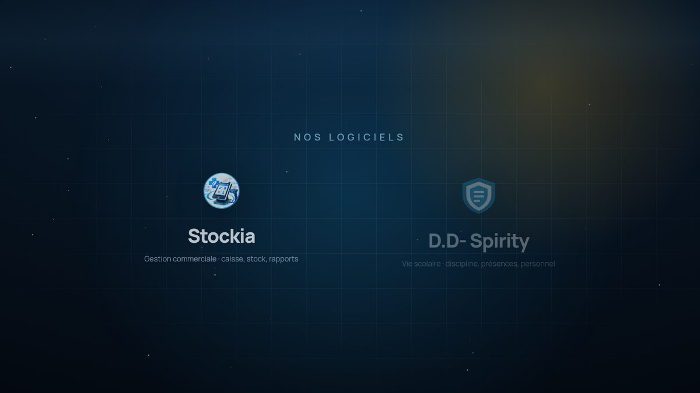

01 Gestion commerciale
Stockia
Caisse, stock et rapports pour pharmacies et commerces
Le poste de vente qui encaisse, décompte le stock et rend des comptes. Pensé pour un comptoir qui ne peut pas attendre : la vente est enregistrée avant l'impression, le reçu ne bloque jamais l'encaissement, et les rapports se lisent en fin de journée.
- Stock, ventes et opérations de caisse
- Produits et fournisseurs
- Dettes et créances
- Rapports et statistiques
Windows et Android · données sur le poste
